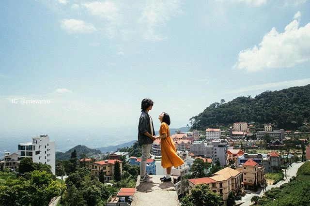

Sở hữu nhiều danh thắng làm say lòng người như: Tam Đảo, hồ Đại Lải, Thiền Viện Trúc Lâm...nhưng chưa thực sự có nhiều người nhắc đến cái tên Vĩnh Phúc khi liên tưởng đến các địa điểm du lịch miền Bắc. Vậy Vĩnh Phúc ở đâu? Cùng tìm hiểu nhé.
Vĩnh Phúc ở đâu?
Là một trong những trung tâm kinh tế và du lịch của đồng bằng sông Hồng, Vĩnh Phúc vốn bao gồm tỉnh Vĩnh Yên và tỉnh Phúc Yên trước đây. Vì nằm ở vùng đỉnh của châu thổ sông Hồng nên Vĩnh Phúc có khí hậu khá mát mẻ, chưa khai thác du lịch nhiều nên thiên nhiên ở đây còn khá hoang sơ.
Nhưng cũng chính nét đẹp tự nhiên này mà khiến bao người mê mẩn lạc bước chân. Nhắc đến Vĩnh Phúc, người ta nhớ đến một Tam Đảo lãng đãng trong mây, hoang sơ mà hùng vĩ, và một hồ Đại Lải xanh ngát, bạt ngàn và trong trẻo.
Phía bắc giáp hai tỉnh Thái Nguyên và Tuyên Quang, đường ranh giới là dãy núi Tam Đảo. Vĩnh Phúc tiếp giáp với sân bay quốc tế Nội Bài, là điểm đầu của quốc lộ 18 đi cảng Cái Lân (tỉnh Quảng Ninh), đồng thời có đường sắt Hà Nội – Lào Cai, đường quốc lộ 2 chạy dọc tỉnh.
Với khoảng cách chỉ 46km, di chuyển từ Hà Nội đến Vĩnh Phúc chỉ mất hơn một giờ đồng hồ, bạn có thể di chuyển bằng nhiều cách như xe buýt (xe 58), xe khách, tàu hoặc phương tiện cá nhân.
Nếu như muốn đến thành phố Vĩnh Yên thì mất đến một tiếng rưỡi với đoạn đường gần 60km.